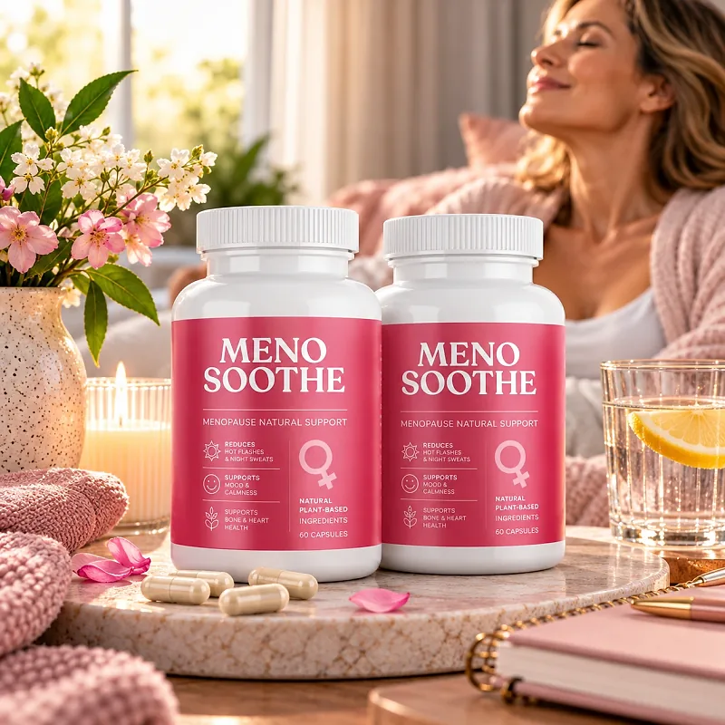

What Is MenoSoothe And How Does It Work?
MenoSoothe is a dietary supplement in capsules formulated especially for women going through menopause. It is designed to support comfort, a balanced mood, restful nights, and overall well-being during this stage of life, with one capsule a day.
According to the official website, the formula combines select ingredients traditionally used to support overall well-being during menopause, to help women feel balanced, comfortable, and confident every day. The label on the affiliate photos adds three goals: comfort during hot flashes and night sweats, mood and calmness, and bone and heart health, with natural plant-based ingredients.
The idea behind menopause formulas of this kind is to support the body through the hormonal changes of this transition with plants and nutrients that have a long history of traditional use for women's wellness, such as the botanicals shown in the product photos.
Rather than acting as a quick fix, MenoSoothe is meant to be taken every day, for several months; the official website says some women notice general comfort after a few weeks, while others take longer.
With consistent daily use, a formula of this kind is intended to support more comfortable days and nights and a steadier mood, especially when combined with good sleep habits, regular exercise, a balanced diet, and less caffeine and alcohol.
From a practical standpoint, MenoSoothe is one capsule a day with water.
According to the official website, it is manufactured in the USA from foreign and domestic ingredients. It is a dietary supplement, not a hormone therapy, and it does not replace a conversation with your doctor about menopause. The website does not publish the list of ingredients or the Supplement Facts panel, so the label on the bottle is the reference to check.
MenoSoothe Side Effects
MenoSoothe is presented by the official website as a natural formula with ingredients traditionally used to gently support well-being during menopause.
According to the badges shown with the product, it is made in the USA in an FDA-registered facility that follows Good Manufacturing Practices, and it is described as natural and non-GMO. Those badges are a good sign, but they do not replace the label, which is the only reliable list of what is inside.
There are no widespread reports of serious side effects. Because the official website does not list the ingredients, it is not possible to point to specific interactions. Many menopause formulas use plant compounds with mild hormone-like activity, so women with a history of hormone-sensitive conditions, women on hormone therapy, and women taking blood thinners or antidepressants should talk to their doctor first and read the label carefully. Heavy bleeding, chest pain, or sudden changes in mood need a doctor, not a supplement. It is not intended to diagnose, treat, cure, or prevent any disease, and individual results may vary.
The official website itself suggests consulting a healthcare provider for personalized support during menopause, which is a good idea before starting any new supplement.
MenoSoothe Dosage
According to the official FAQ, the way to take MenoSoothe is to follow the instructions on the label, and it is typically advised to take one capsule daily with water, as part of a consistent routine.
Formulated as an easy daily capsule, it requires no powders to mix and nothing to measure. Taking it at the same time each day, with breakfast or dinner, makes the routine easy to remember.
For best results, consistency is key. The official website recommends regular use over several months, and the packages come with one, three, or six bottles, each sold as a 30-day supply. The affiliate photos show 60 capsules in each bottle, so the label on the bottle is the best reference for how long each one lasts.
Healthy habits help a lot during menopause: a cool bedroom and regular sleep schedule, daily movement, calcium- and protein-rich meals, less caffeine and alcohol in the evening, and time for relaxation.
As with any dietary supplement, it's important not to exceed the recommended dose and to check the label on your bottle. MenoSoothe works best when used regularly, combined with healthy daily habits.
MenoSoothe – Refund Policy
MenoSoothe comes with a 60-day, 100% money-back guarantee, which gives buyers two months to try the capsules.
According to the returns page on the official website, the refund request must be made no later than 60 days after the product is shipped; the date is on the package and in the confirmation email. The product is sent back by mail, and the return shipping is paid by the customer. Once the package arrives, the refund takes 3 to 5 days to be processed.
How to request a refund: Fill in the Return and Refund Form that comes with the order and mail the product to 19655 E 35th Drive, Suite 100, Aurora, CO 80011. You receive an email once the refund is done.
Customer Support Contact Information: the support email listed on the official website, or +1 (302) 200-3480, as listed on the contact page. Order questions can also go to BuyGoods, the retailer.
Refund Processing Time: 3 to 5 days after the package is received, according to the policy; how long it takes to show on your statement depends on your bank or card company.
The steps are published openly, which makes the MenoSoothe refund policy easy to follow if the product is not for you.
MenoSoothe – Where To Buy
MenoSoothe is sold through its official website, so if you decide to try it, it's important to be careful about where you purchase it. The official website is the only sales channel the manufacturer lists, and it does not point to marketplaces such as Amazon, eBay, or Walmart.
Listings on third-party platforms may look similar but cannot be verified as authentic, raising concerns about safety, quality, and ingredient freshness. Products purchased outside the official source may not be covered by the money-back guarantee.
For this reason, it makes sense to purchase MenoSoothe only through the official website. Buying directly from the official source ensures you receive the authentic original product, with access to customer support and the full guarantee. Orders placed there go through a secure checkout, and the return and contact pages are linked at the bottom of the official page.
To avoid counterfeit batches and ensure maximum quality, always verify that you are ordering from the official MenoSoothe website before completing your purchase.
To ensure you’re getting the authentic product, most users choose to visit the official website.
Is MenoSoothe A Scam?
Based on what the official website discloses, MenoSoothe appears to be a real product: a capsule supplement sold through an established retailer (BuyGoods), with a published refund policy, a return address in Aurora, Colorado, and a phone line for support.
The main point of attention is transparency about the formula. The official website talks about ingredients traditionally used during menopause but does not name them and does not publish the label. Before ordering, it is worth asking customer support for the full Supplement Facts panel, especially for women who take hormone therapy or other medication.
On the positive side, the website's language is more careful than usual in this category: it speaks of support, comfort, and well-being rather than promising to stop symptoms, and it recommends talking to a healthcare provider. The FAQ also says results take weeks or months and vary from woman to woman.
The official website publishes no written customer testimonials, so this review does not quote any. Results vary from person to person, and no supplement replaces medical guidance during menopause.
MenoSoothe is backed by a 60-day money-back guarantee, and the official website says every order is a one-time payment, with no recurring charges.
For women who want a simple daily capsule to support comfort, mood, and well-being during menopause, MenoSoothe is worth considering — especially when purchased directly from the official website.
For those who want to verify product details or check current availability, the official MenoSoothe website remains the safest option.

Check Availability On Official Website